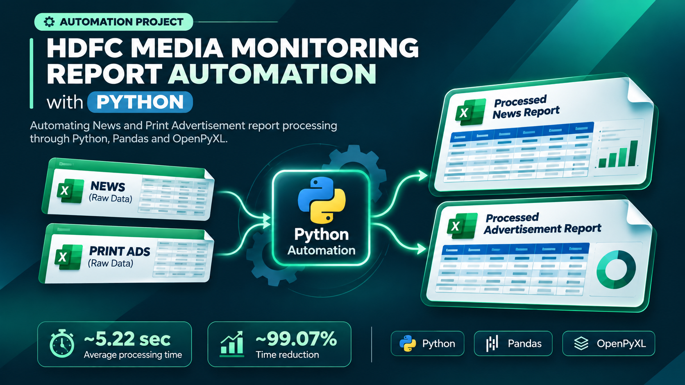
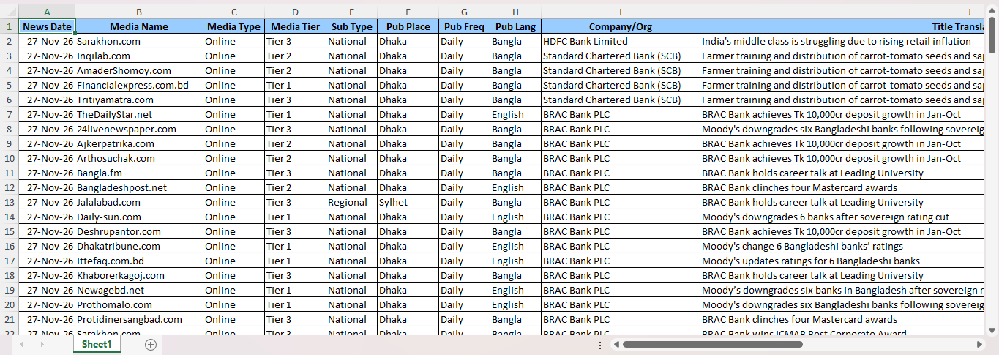
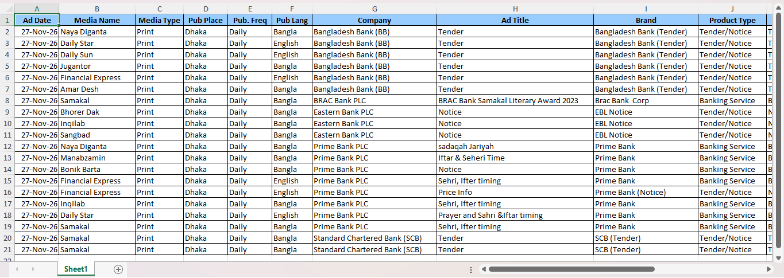

HDFC Media Monitoring Report Automation
Automating News and Print Advertisement report preparation through Python—transforming two Excel datasets into standardized output workbooks with one script execution.
Read the PDF case study ↗BACK TO AUTOMATION PROJECTS
The Challenge
Two separate Excel datasets required repetitive processing before they could be delivered in their final report format.
News report
- Filter records using a predefined organization list.
- Update media classification and reporting date.
- Remove unnecessary fields.
- Arrange records by organization priority.
- Apply consistent workbook formatting.
Advertisement report
- Filter using its own configured organization list.
- Update media classification and date.
- Remove unnecessary columns.
- Retain Print advertisements.
- Sort and format the output.
The documented manual workflow involved 12 steps across the two datasets, taking around 10 minutes on average depending on dataset size.
The Solution
A single Python script runs both processing functions sequentially and creates two separate output workbooks.
News workflow
- Filter to the configured 12 organizations.
- Replace
NationalwithPrint. - Update News Date to the processing date.
- Remove nine unnecessary columns.
- Sort according to the organization-priority sequence.
- Apply standardized formatting.
Advertisement workflow
- Filter to the configured 14 organizations.
- Replace
NationalwithPrint. - Update Ad Date to the processing date.
- Remove Ad Link and Reporter.
- Retain Print advertisements.
- Sort and format the workbook.
Standardized Excel formatting
- Thin black borders across used cells.
- Blue header fill (#99CCFF).
- Bold header text.
- Centered horizontal and vertical header alignment.
- Adjusted column widths.
Processed Report Outputs
Two separate Excel workbooks are produced by the automation.


Measured Results
Three documented test runs were averaged to compare manual and automated processing.
| Rows | Manual time | Automated time | Reduction |
|---|---|---|---|
| 517 | 9.36 min | 5.17 sec | 99.08% |
| 545 | 9.87 min | 5.44 sec | 99.08% |
| 498 | 9.02 min | 5.06 sec | 99.06% |
Three test runs were conducted using files of different sizes. Across all runs, the automated workflow consistently completed in approximately five seconds, compared with around nine to ten minutes manually.
Technical Implementation
Python
Orchestrates the two processing workflows and file handling.
Pandas
Dataset filtering, transformation, column removal and sorting.
OpenPyXL
Excel workbook formatting and file handling.
The script uses its own project folder for input and output paths rather than fixed absolute paths.
Portfolio demonstration: This project uses demo/anonymized data and a simulated reporting workflow. It is not commissioned by, endorsed by or affiliated with HDFC Bank Limited.
GitHub Repository
HDFC_Media_Monitoring_Report_Automation_with_Python
Python-based automation for News and Print Advertisement media monitoring report processing.
Python · Pandas · OpenPyXL